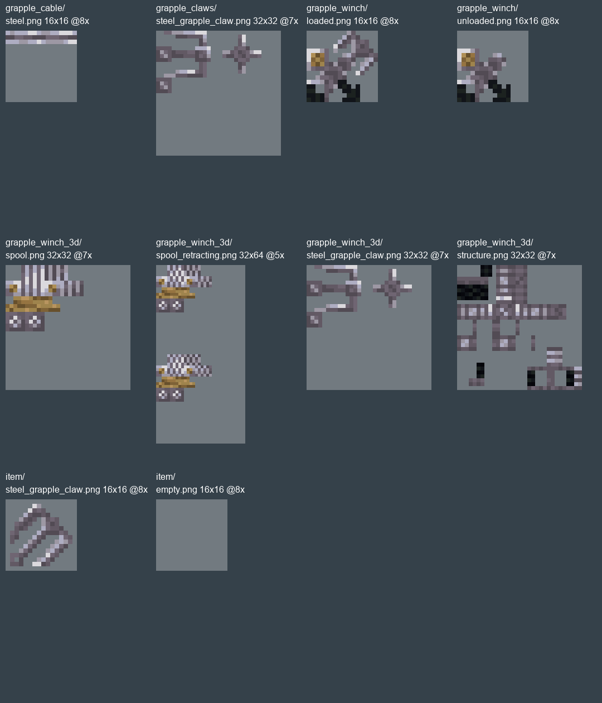
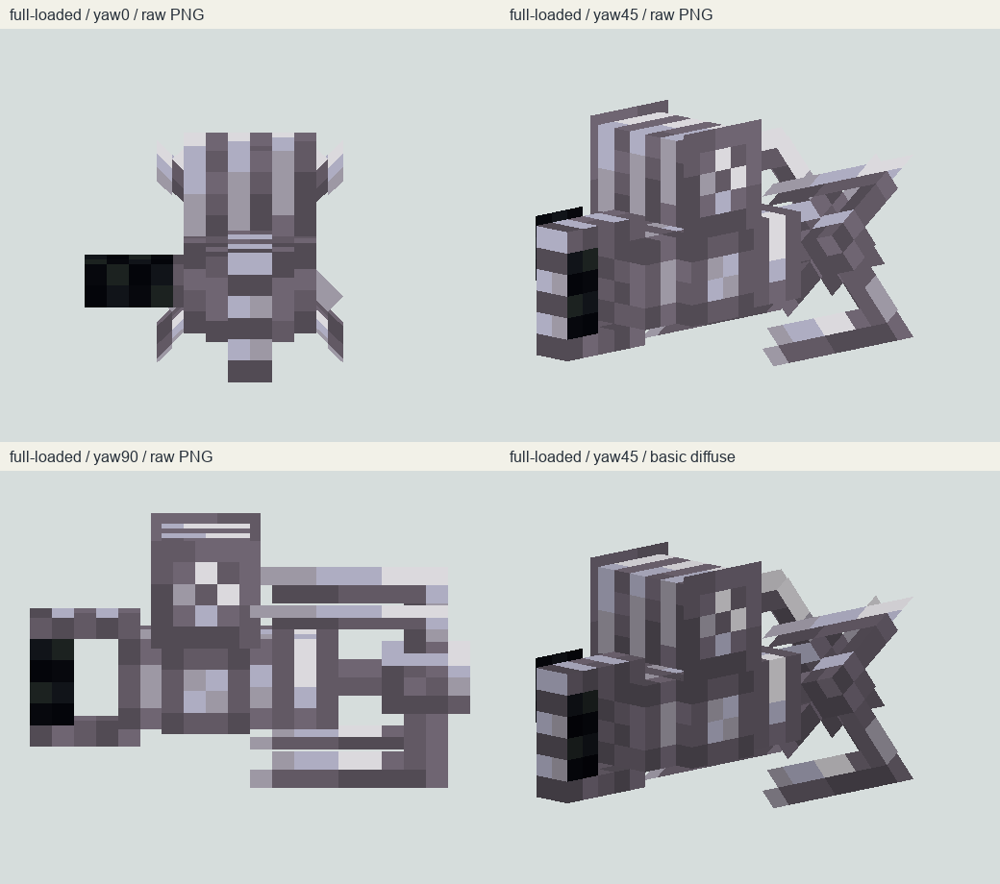
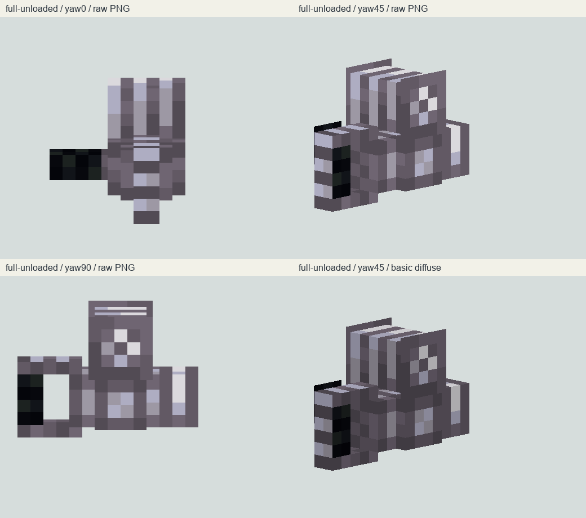
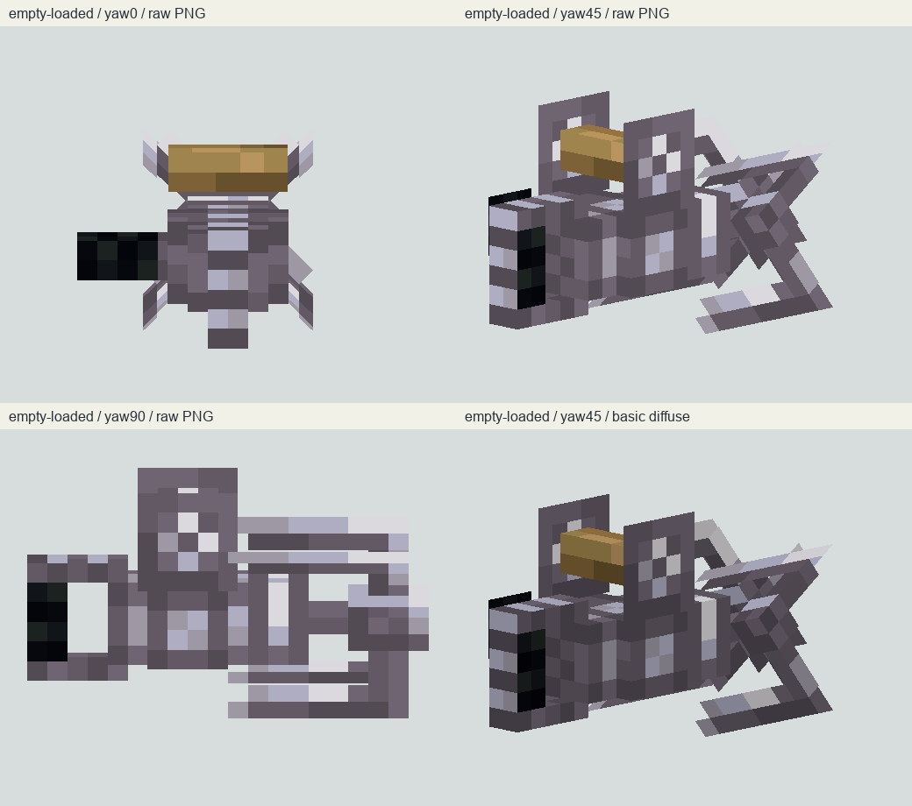
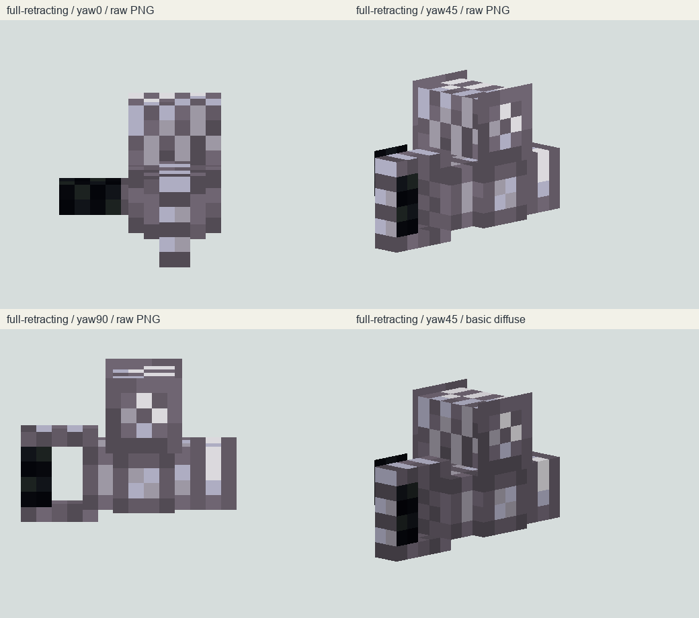
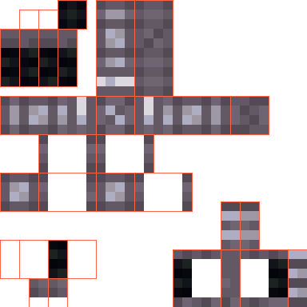
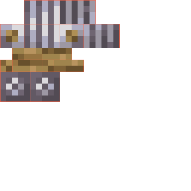
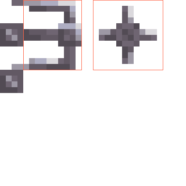

实体 renderer 使用 32×32 钢爪 PNG，2对反面+4旋转爪面共8quads；手持另走物品 JSON。item registry path 拼入 Klaxon 目录，不保留外部命名空间。
不是 Gecko 生物或通用跨模组自动纹理机制；无游戏画面。固定 7d31931c1c94dc3d3e4209c6897bc77aad8c8432 · 1.21.1 Fabric 跨版本研究。延伸既有家族，新增验收计数 0。未修改生产资源、未启动 Java 或游戏。
实体 renderer 使用 32×32 钢爪 PNG，2对反面+4旋转爪面共8quads；手持另走物品 JSON。item registry path 拼入 Klaxon 目录，不保留外部命名空间。
不是 Gecko 生物或通用跨模组自动纹理机制；无游戏画面。ALT_HAND_MODEL 对 GUI/FIXED/GROUND 之外上下文启用，alternate 模型再解析自己的 overrides；左手可选 mirrored。
不能说仅第一人称；未模拟 Minecraft 烘焙与手臂矩阵。ModelUtils 围绕 X=8 反转 from/to、换东西面UV、反转Y/Z角；rotation origin 和 display transforms 保持。
非中心 origin 的一般情况不可直接保证；本轮不修改作者资源、不宣称运行出错。cable_length 为已有连接 cable/max；charged 看 charged projectiles；retracting 看玩家连接状态。未连接缺省0。
未绑定原始发射 stack，不能称逐 stack 独立状态。S2C 注册→client.execute→新建或sync连接→重置manager更新计数；discard按connectionID排队。fallback positions经VECTOR3F编码再转Vec3。
double坐标记录不等于网络保留双精度；未闭合1.21原生codec/merged Mixin。客户端 override setCableLength 无条件发 C2S；构造与远端sync也会调用。sync先按旧max处理长度再更新max；本地有连接时可保留预测长度。
服务端按sender当前连接处理，不能推定为跨玩家控制或已复现网络漏洞。loaded getPlayerEyePos 返回player.position；丢实体时fallback来自服务器eye。画线getHandPos另取眼高/手部矩阵。
这是所选源码的基准差异，不是实测位移；不以1.20原生代码冒充1.21。实际循环每整格一段、末尾按余长；3/16格宽，两交叉cutout面，U按段余长，V0..3/16。代码注释2段每格与循环不一致。
同一绳索家族；不是实体链环，也不新增参考。distance<1 时maxSegments=0，segmentIndex/maxSegments为float0/0；整数距离会多绘制长度0末段。
记录算术边界，不宣称GPU画面/崩溃；没有游戏执行。两端block/sky光插值；午夜daylight multiplier=0，夜视最低13，燃烧/发光端block15，白色顶点与传入packedlight。
这不是发光PNG材质，软件基础漫反射不等同游戏光照。ClientLevel.tick TAIL tickmanager；renderLevel在endLastBatch前调用manager.render；客户端disconnect会调用hook onDisconnect。
与服务端断连实现不同；仅检查源码配置入口，未验证混入后的字节码。S2C lockout 在client线程设flag并stopUsingItem；Minecraft startUseItem/LocalPlayer isUsingItem包装阻断，按键路径特定ordinal重新放行。
MultiPlayerGameMode目标method_41929仍须相同版本运行校验，不因源码存在就判定注入成功。同尺度、逐面采样真实PNG；不是 Minecraft 截图，不代表游戏烘焙/手持镜像/光照验收。
actual-pngs-integer-zoom.png

full-loaded-software.png

full-unloaded-software.png

empty-loaded-software.png

full-retracting-software.png

uv-structure.png

uv-spool.png

uv-steel_grapple_claw.png

可借鉴：状态与图形分开；干净大面、材质定向对比；卷轴余量与动作状态可见。不能把4状态、10 PNG、28 overrides各算独立参考。